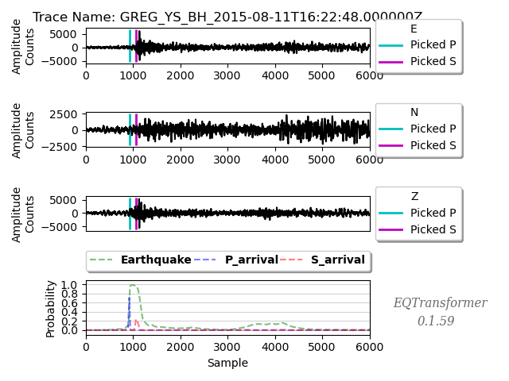

Earthquake Transformer Tutorial
Brief introduction
Deep learning model for automatic detection
The neural network was first applied in seismology to pick arrival phases since 2006. The algorithm of using machine learning in seismology is to build a model and train it with large sets of well - labeled data. After training, the model can predict from a given sets of input which means it can detect the P - and S - waves automatically. We can also obtain the probability of the results so to evaluate the performance.
There are numerous architecture of deep learning model. In seismology, Convolutional Neural Network (CNN) is commonly used for classifying the features.
By setting up a robust automatic system, we can enhance the accuracy and efficiency of the earthquake detection.
What is Earthquake Transformer (EQT)
Earthquake Transformer (EQT) is one of the deep learning model for earthquake detection and phase picking.
You can refer the architecture of EQT here.
By using EQT, we can detect the earthquake phases (P & S) automatically. The model has been trained on global seismic data so we can simply apply it in different sites.
How to install EQT
Note
Open your terminal and run the following commands.
$ conda create --name eat python=3.7
$ conda activate eat
$ conda install -c smousavi05 eqtransformer
Warning
Exclude $ sign and start without whitespace!
In case if you cannot install EQT using conda, you can try:
$ pip install git+https://github.com/smousavi05/EQTransformer
Contents of this tutorial
In this tutorial, we will cover:
Make the station list and Download the data
Detect earthquakes
Visualise the result
Phase association
Developed by LAU Tsz Lam Zoe.
1 Make the station list and Download the data
1.1 Constrain the area and the time of interest
It is better for us to constrain a small area of interest, otherwise the downloading time will be extended.
We will use the example from the ObsPy tutorial. But, we will download the continuous data using EQT this time.
# Area of interest
# latitude
lat_min = -8
lat_max = -9
# longitude
lon_min = 122.5
lon_max = 124.5
# Time of interest
# You can try with 1 day data first
start_time = "2015-08-11 00:00:00.00"
end_time = "2015-08-12 00:00:00.00"
1.2 Make Station list
Station list contains the information of the stations and it will help to find the waveforms by stations during the detection.
import os
json_basepath = os.path.join(os.getcwd(),"json/station_list.json")
from EQTransformer.utils.downloader import makeStationList
makeStationList(json_path=json_basepath, client_list=["IRIS"], min_lat=lat_min, max_lat=lat_max, min_lon=lon_min, max_lon=lon_max, start_time=start_time, end_time=end_time, channel_list=["HH[ZNE]", "HH[Z21]", "BH[ZNE]"])
os.path.join combine one or more path names into a single path.
makeStationList make the station list that is based on your interest and applicable for the earthquake transformer.
Here is the example of the station list: station_list.json.
It is a dictionary containing the station name, network, channels and coordinates.
Note
You can also customise the station list by creating your own dictionary according to the format.
1.3 Download Data
We can download the waveform data directly from the EQT. The file names of the downloaded data must applicable to EQT.
from EQTransformer.utils.downloader import downloadMseeds
# We have already constrained the area and time of interest
downloadMseeds(client_list=["IRIS"], stations_json=json_basepath, output_dir="mseed_data", min_lat=lat_min, max_lat=lat_max, min_lon=-lon_min, max_lon=lon_max, start_time=start_time, end_time=end_time, chunk_size=1, channel_list=[], n_processor=2)
downloadMseeds download the waveform data according to your station list and your interest.
Make sure you have already made the station list before using this function. The data downloaded will be in mseed format and saved into a directory called mseed_data.
Note
If you have your own data, then you can skip this procedure.
2 Detect Earthquake
The idea of detecting earthquake is to input the waveform data and station list, then the model will classify the P - and S - wave together with their corresponding arrival time and save it according to the stations.
There are many alternative ways to undergo the detection. We here introduce one of the method which is using the preprocessed data (hdf5 files).
The hdf5 file can handle large datasets by slicing data and shorten the time of reading large chunk of individual waveforms.
from EQTransformer.utils.hdf5_maker import preprocessor
preprocessor(preproc_dir="preproc", mseed_dir='mseed_data', stations_json='json/station_list.json', overlap=0.3, n_processor=2)
preprocessor prepare the data by slicing it into 1-min long Numpy array in hdf5 file and generate a CSV that contains the list of trace it the hdf5 file.
Note
Make sure you have preprocess the data using preprocessor before predictor.
After preprocessor , there will be a new directory name mseed_data_processed_hdf5. It will be used in the next step.
from EQTransformer.core.predictor import predictor
predictor(input_dir= 'mseed_data_processed_hdfs', input_model='EqT_model.h5', output_dir='detections', detection_threshold=0.3, P_threshold=0.1, S_threshold=0.1, number_of_plots=100, plot_mode='time')
predictor predicts the earthquakes by naming the directories of input, output and the model.
Note
You can set up the detection according to different settings of your area.
The threshold of the detection should be adjusted with the ratio of false detection depending on the data noise level. For example, if the noise level is high in the studied region, then the threshold value has to be high in order to reduce the false detection.
Here is the output files after the detection:
X_report.txt the report contains information on input and final results (including total number of events that are detected) X_report.txt.
X_prediction_results.csv the file contains detection and picking results X_prediction_results.csv.
figures a directory saves all the plots of the detected events.
Here is one of the output figures of the detected event:
{kind=link}
In this figure, we can see the probability and the arrival times of P - and S - waves.
You can refer the same event in the ObsPy tutorial!
3 Visualise the results
Histogram
from EQTransformer.utils.plot import plot_detections
plot_detections(input_dir="detections", input_json="station_list.json", plot_type='station_map', marker_size=50)
plot_detections generate map plot to visualise the number of detections over stations.
{kind=link}
Note
The plot here simply show the distribution of the stations and the number of detections accordingly. You can use other method to plot in order the show a detailed map plot (i.e. GMT).
4 Phase association
Phase association is used to review the detected seismic phases and group them together with the same origin of earthquake.
After the phase picking process, you can undergo a simple association procedure. This can help you to proceed to the next step (relocation) easily.
from EQTransformer.utils.associator import run_associator
run_associator(input_dir='detections', start_time="2015-08-11 00:00:00.00", end_time="2015-08-12 00:00:00.00", moving_window=15, pair_n=3)
run_associator perform simple and fast association for further relocation.
Output files:
1.Y2000.phsresults in HypoInverse format -> HypoInverseY2000.phs2.associations.xmlObsPy QuakeML format -> conventional location algorithms (i.e. NonLinLoc)associations.xml3.traceName_dic.jsondictionary saves the trace names for source waveforms of the detected events -> later accesstraceName_dic.json
Note
Relocation is needed for accurate location.